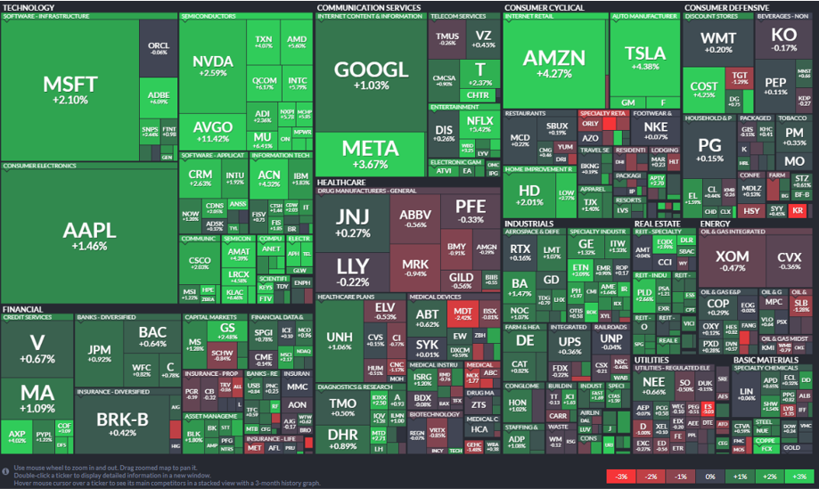

Imagine you are an expert in data visualization, and you aim to educate your students about a particular type of chart for example- treemap. We will give you an example of a chart. Your goal is to create a curricula based on the chart. Please outline the topics you will cover in your class lecture, ranging from fundamental concepts to advanced-level understanding, so that your students can fully comprehend the data displayed in the provided example and in future they can extract information from similar kind of chart.

Curriculum Overview
Module 1: Elemental and Encoded Aspects of Treemaps
Lesson 1.1: Introduction to Treemap Chart Type
Lesson 1.2: Understanding Encoding Channels in Treemaps
Lesson 1.3: Decoding Titles, Axis Ranges, Labels, and Colors
Module 2: Statistical and Relational Analysis in Treemaps
Lesson 2.1: Descriptive Statistics in the Context of Treemaps
Lesson 2.2: Identifying Extrema and Outliers in Treemap Data
Lesson 2.3: Exploring Correlations and Point-wise Comparisons
Module 3: Perceptual and Cognitive Interpretation of Treemaps
Lesson 3.1: Identifying Complex Trends and Patterns
Lesson 3.2: Synthesizing Information from Commonplace Concepts
Lesson 3.3: Utilizing Reference Visualization for Enhanced Understanding
Module 4: Contextual Knowledge and Domain-Specific Expertise
Lesson 4.1: Domain-Specific Insights within Treemaps
Lesson 4.2: Analyzing Current Events and Social-Political Context through Treemaps
Lesson 4.3: Developing Contextual Knowledge and Expertise in Treemap Interpretation